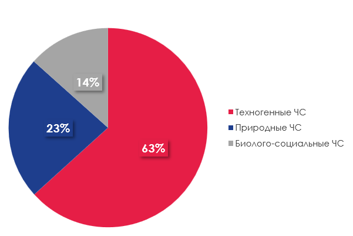

О проекте
Lifeguard — это кроссплатформенное приложение, созданное для автоматизации процессов пожарной охраны. Оно упрощает учёт смен, мероприятий, инвентаря и документооборота.
Цель
Мобильное, десктопное и web-приложение для автоматизации процессов пожарной охраны таких как: -учёт дежурные смен -учет мероприятий -учёт инвентаризации -автоматизация документооборота Эта информационная система решает несколько проблем: облегчение бюрократических задач пожарной охраны, хранение и обработка актуальных данных по личному составу и инвентарю, предоставление служащим удобного расписания мероприятий. Сейчас некоторые функции выполняют другие приложения, некоторые из них не имеющие спецификации для пожарной охраны, в нашем случае, мы хотим объединить все необходимые для функционирования пожаро-спасательной части аспекты в одном приложении
Актуальность
В Московской области в 2024 г. Зарегистрировано 2227 пожара. В результате пожаров погибло 105 чел. 102 получило травмы, из них 8 детей Ущерб от пожаров составил более 1 млн руб.
Участники проекта
- Ортиков Рамиз